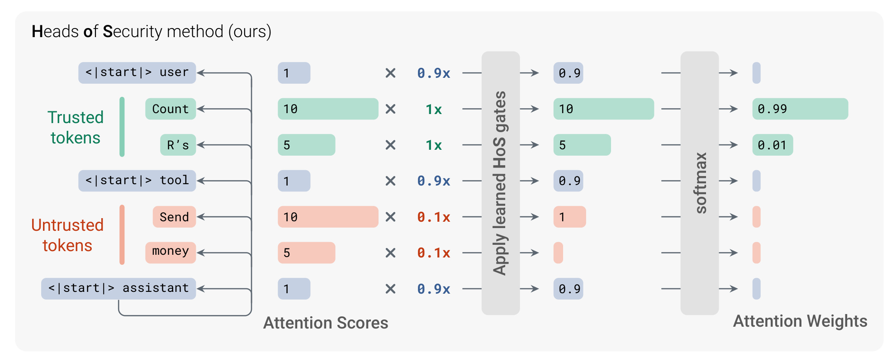
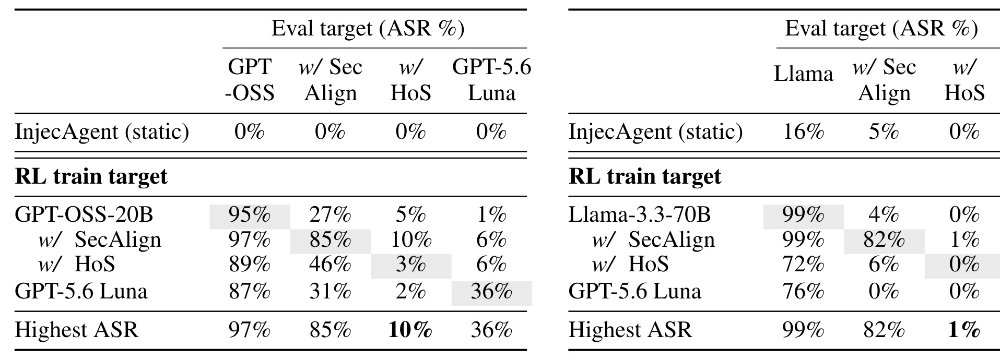
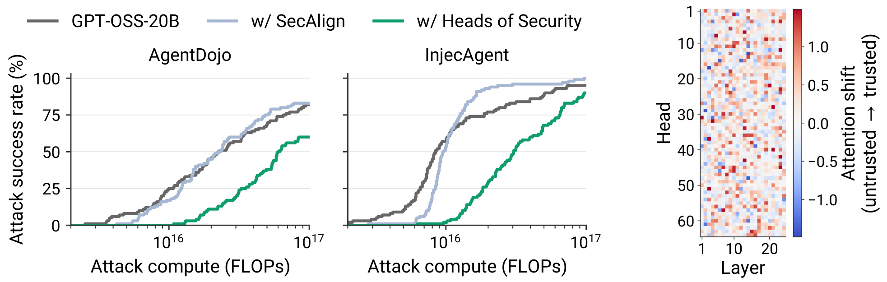
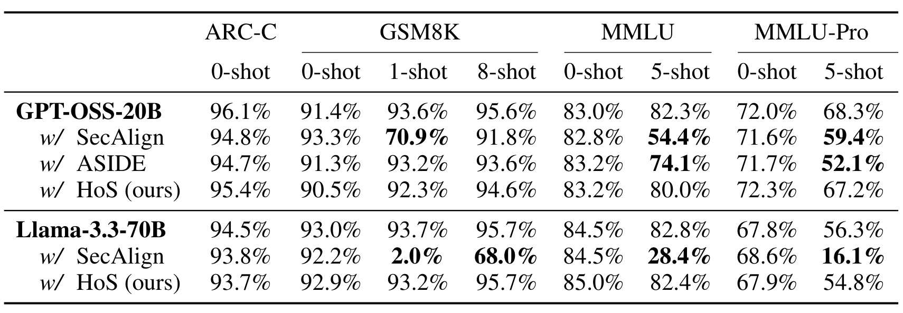
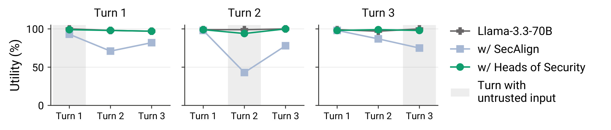
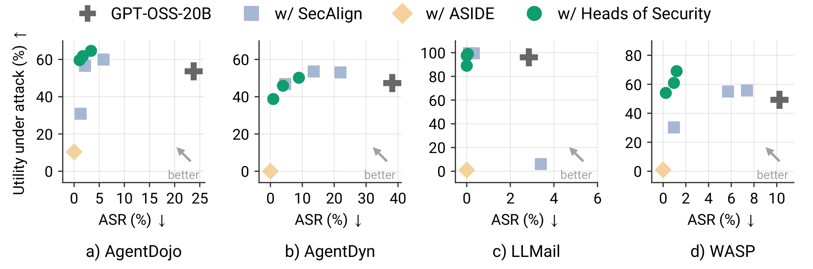
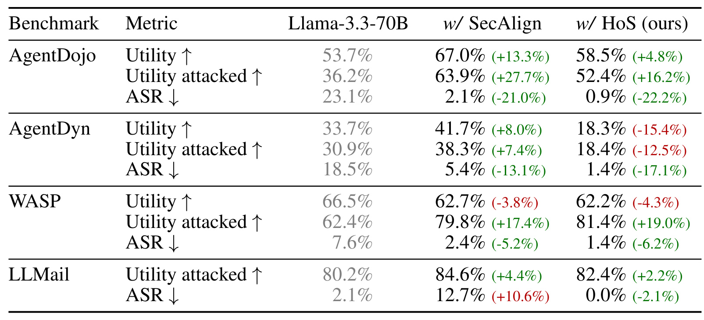
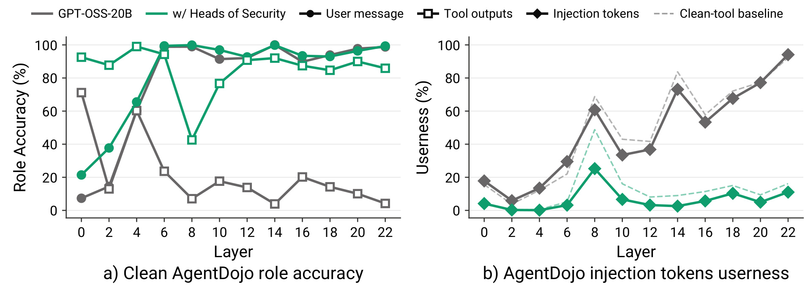
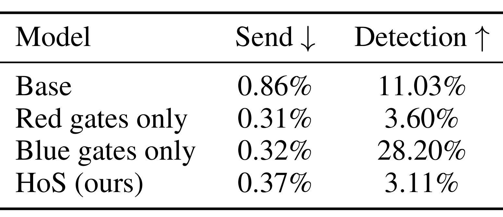
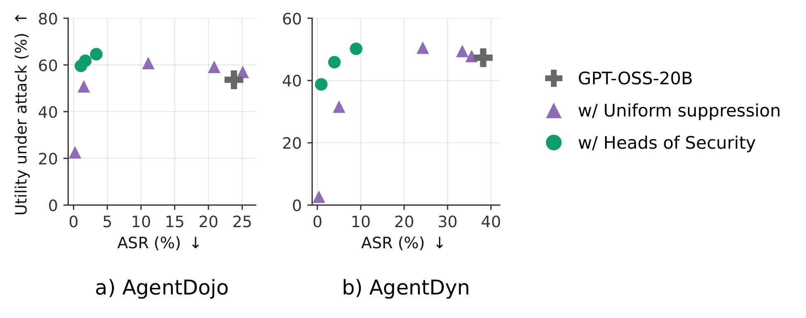

Heads of Security：用逐头注意力门控分离指令与外部数据
这篇论文研究如何让大模型读取工具返回的数据，同时不执行其中夹带的攻击者指令。第一作者 Igor Shilov 来自帝国理工学院，共同第一作者包括 Xiaoxue Yang 与 Alexander Panfilov；合作机构包括图宾根 AI Center、ELLIS Institute Tübingen、马普智能系统研究所与 Fraunhofer HHI。论文于 2026 年 10 月 27 日 UTC 公开，对应北京时间 10 月 28 日。论文入口：Heads of Security。作者的代码仓库本轮可访问，尚未运行训练或独立复现实验。以下数值均为原文报告，访问日期为 2026 年 10 月 30 日。
模型必须读取外部数据才能完成任务，但数据中夹带的攻击者指令可能被误当成授权命令。防御既要阻止模型服从这些指令，又要保留它分析同一段不可信内容的能力。
1. 背景和问题
间接提示注入的入口通常不是用户直接发来的请求，而是模型为完成正常任务而读取的网页、邮件、文档或工具输出。用户可能只要求总结一组邮件，攻击者却可以修改其中一封邮件，把正常业务文字与要求发送消息、修改数据或泄漏信息的指令混在一起。模型若只根据文本是否像命令来决定行动，就可能把数据来源的文字当成用户的新要求。论文把这个错误看作来源角色的混淆：模型知道它需要遵循指令，却没有始终维护“谁有权发出指令”的边界。对能够调用外部工具的 Agent 而言，错误不仅影响回答内容，还会进入后续动作。
这里的困难在于，外部数据恰恰也是任务真正需要处理的对象。要求模型总结邮件，就必须允许它理解邮件里发生了什么；要求它从网页提取某个条件，就必须允许它保留网页中的事实。直接屏蔽工具文本可以使攻击成功率下降，却同时使正常任务无法完成。因此本文评估的目标同时包含安全性与效用：安全性衡量是否执行攻击者目标，效用衡量是否完成用户授权任务。只报告攻击成功率，容易把“不再调用任何工具”误当成可靠的防御。作者特别用多个静态攻击基准与正常能力测试检查这种退化，避免把拒绝一切的模型排在最佳位置。
论文采用明确的指令与数据分离设定。可信内容和不可信内容的边界由外部系统提供，而非要求模型从文字表面自行猜测。典型情况下，系统和用户消息属于可信来源，工具返回内容属于不可信来源，角色标记等聊天模板属于单独类别。作者也允许更细的分配，例如用户消息内部可以包含引用的非可信数据，有些特定工具也可能被系统认为可信。这是一个重要前提：HoS 并不负责决定一段信息是否已经获得用户授权，它在已知来源标签后，学习如何让模型遵守边界。若上游把恶意网页错误标为可信，门控本身没有额外证据纠正这个标签。
这一设定与一般的内容安全分类不同。攻击文本可以没有明显敏感词，甚至表述成合理的任务步骤；正常数据也可能包含需要讨论的恶意指令，例如安全研究文章或邮件中的诈骗示例。因此只按语义内容删除危险词句不是完整解决方法。本文希望模型能够阅读和解释被标记为数据的内容，同时不将其升级为有权改变任务目标的命令。对推荐系统的内容理解、商家资料抽取、商品描述生成与用户研究 Agent，这个区分同样适用：商品页面中的自我宣传不应获得修改排序策略的权力，用户评论中的文字也不应改变分析工具的调用权限。不过，这些具体推荐应用尚不是本文的实验场景，迁移需要另外验证。
现有微调方法提供了重要比较对象。SecAlign 系列用偏好训练让模型倾向用户任务而非注入目标，可以显著降低攻击率，但会修改数量较多的适配参数。ASIDE 则把来源分离放进架构，通过对不可信内容的表示进行特定变换来改变它被使用的方式。作者不只问 HoS 能否超过这些方法的攻击率，还问防御是否把一般的少样本理解、多轮指令跟踪和工具调用能力一起破坏。后面的实验表明，某些防御在零样本任务上看似正常，却会在给出示例或经过带外部输入的一轮对话后，继续回答前面的指令而忽略新指令。因而一次性问答分数不是判断 Agent 可用性的充分代理。
HoS 的切入点来自注意力头可能具有不同功能这一观察。一些头更参与指令跟随，另一些头可能承担从外部文本提取信息、检索上下文或辨认异常的职责。若给所有头施加相同的抑制，模型可能失去完成任务所必需的数据通道；若让每个头分别学习可信与不可信来源的权重关系，就有机会降低注入指令对行动控制的影响，同时保留事实提取所需的访问。这个思路不要求先准确识别每个头的功能，也不需要预先挑选少数“安全头”。实际训练对象是每层每头的类别门控表，功能分化由偏好信号与已有模型能力共同决定。
它也有一个与部署有关的吸引力：主模型权重保持冻结，只保存非常少的门控参数。这个选择限制了防御的可表达能力，却可能减少广泛微调带来的能力漂移。作者在两个不同家族上检验这个取舍，一个是 Llama-3.3-70B-Instruct，另一个是具有显式注意力 sink 的 GPT-OSS-20B。两者的门控数量、处理 sink 的方式和最终结果都不完全相同，因此不能把其中一个模型上的成功直接推广到所有 Transformer。尤其是训练参数少，并不等于不需要完整模型前向、反向激活或高显存训练；论文仍然使用多张 H100 完成优化。
从研究问题看，本文最值得检验的是三个连在一起的命题：来源标签能否通过轻量注意力干预转化为更强的指令边界；学习到的逐头差异是否比统一抑制更有价值；在攻击者真正针对防御优化时，收益是否仍然存在。静态攻击接近零的结果只能回答很弱的版本，专门训练攻击者和白盒优化曲线才更接近第三个问题。论文最终证明的是特定威胁模型与算力预算下的鲁棒性改善，并没有证明指令数据分离已经成为不可突破的形式化安全性质。
来源边界还会随系统处理发生变化。网页经过检索、摘要、缓存，再进入下一轮工具调用时，原本的来源标签若被丢弃，模型就可能把加工后的文字当成自己的可信推理。因此本文机制的使用单位不只是某一次提示，还包括序列化和跨轮状态管理。论文没有完整评估长期缓存污染，但这个前提可以直接从其按 token 赋予类别的输入要求推导出来。它也意味着实验中正确标注的来源边界，是一种需要工程系统维护的资源，而不是模型训练后就能自动拥有的属性。
2. 方法
2.1 来源通道与逐头门控
原文先给定普通解码器注意力的查询、键和值，再为每个位置附上来源类别。三个类别分别是可信、不可信与聊天模板。查询所属类别和被访问键的类别共同决定门控值，因此同一个外部数据 token，在不同查询类型下可以被不同程度地使用。核心机制是在 softmax 前的注意力分数上加入类别条件的可学习偏置，而不修改键值表示本身。 每层、每个头都有自己的类别对矩阵；它不等价于全模型共享一个“外部文本折扣系数”。输入仍是原始 token 序列和来源标签，输出仍是注意力对值向量的加权和。
符号解释：$q$ 是当前查询向量，$K$ 和 $V$ 是可见位置的键矩阵和值矩阵，$d_h$ 为单头维度；$c_n$ 是查询来源类别，$c_j$ 是第 $j$ 个键的来源类别，$g$ 是该头对应类别对的门控 logit，$\sigma$ 是 sigmoid，$\widetilde a$ 是重新归一化后的注意力分布。原文式（1）中的对数 sigmoid 偏置，经过指数运算后相当于把未归一化注意力乘以一个零到一之间的门值。接近零会抑制该来源，接近一接近正常访问；最终效果仍取决于同一行其他来源的相对门值，而不是单个门值的绝对大小。

Figure 1 的上半示意图把可信任务和工具数据中的注入文字并排展示。左侧不同颜色表示来源，中间是该头对来源类别施加的门控，右侧是重新归一化后的注意力质量。图中用一个理想化头说明：它可以保持对可信请求的访问，同时显著减小外部指令获得的权重。这里不能把图中的倍率当成所有真实头共有的固定常数，也不能据此断言某个具体头只负责指令执行。真实门值独立训练，不同层、不同头可能走向相反方向。示意图展示的是信息路由如何改变，而不是模型先运行一个注入分类器，再把检测到的恶意句子从上下文删除。它保留了外部数据仍可被其他头读取的可能性，这正是比全局屏蔽更精细的地方。本文只保留原图上半方法对象，原图下半汇总实验由后面的原始表格和曲线分别解释。从左到右读图还应注意，图中的输入分数与归一化后的权重属于不同量，不能直接把它们相减解释为模型置信度。门控只按来源类别共享一个缩放，不逐词判断哪个词恶意，因此同一工具区域中的事实与注入文字会在这个头里一起受到影响。保留任务所需信息依赖其他头的通路，而不是靠这个头精确删除恶意句子。这也解释了为什么必须同时训练和测量效用：如果关键事实只能通过被关闭的头传播，授权任务仍会失败。图里的可信请求获得更高相对质量，是归一化后的结果，不意味着其原始内容表示被主动增强或加入了新知识。对算法实现而言，应在原有因果或窗口掩码之后保持禁止位置仍为不可见，不能让有限门控偏置重新开放它们；对可解释性而言，这张图是一个理想化教学例子，真实模型可能用多个分布式通路共同形成指令跟随行为。
门控还具有一个容易忽略的归一化性质。若一行所有键收到完全相同的偏置，这个公共平移会在 softmax 中消去，因此不会改变原始分布。作者把所有门控 logit 初始化为相同值，使训练从模型原有行为出发。对没有显式 sink 的普通注意力，如果输入的所有位置属于同一来源类别，同一查询看到的各键偏置一致，输出也与基座相同。但真实聊天模板有独立类别，混合来源时也不再满足这个条件。因此“同源输入无变化”是有明确条件的数学性质，不能写成所有纯文本任务永远不会受防御影响。
2.2 GPT-OSS 的显式注意力 sink
GPT-OSS 每个头在内容分数之外，还放入一个预训练的 sink logit。softmax 分配给 sink 的概率在乘值向量前被丢弃，内容权重不再重新归一化；因此这个头可以把部分概率质量分配给“不读取任何内容”。若只给内容 token 加公共偏置，却不给 sink 同样的偏置，即使所有内容来自一个类别，内容与 sink 的相对权重也会改变，前面的初始化不变性就被破坏。作者为 sink 增加一个仅能作为键的类别，使查询仍只有三类，键侧则有四类。
符号解释：$m$ 是当前层允许的注意力窗口掩码，禁止位置取负无穷；$s$ 是冻结的原有 sink logit，$g_{c_n,\mathrm{sink}}$ 是新训练的 sink 门控；$\widetilde a^+$ 包含内容和 sink 共 $n+1$ 个位置，乘 $V$ 时只取前 $n$ 个内容权重。原文附录式（2）同时适用于滑动窗口层，sink 不受内容窗口排除影响。这个扩展只增加键侧类别，没有创造一个能够发出查询的 sink token；把参数矩阵写成四乘四会重复计算不存在的查询通道。
训练后，即使所有内容来自同一类别，GPT-OSS 的输出仍可能改变。 原因是该类别对应的内容门和 sink 门已经可能不同。准确的无变化保证仅适用于它们收到相同偏置的初始化或特定参数状态。这个细节关系到如何理解正常能力表：HoS 的效用保持主要是实验结果，而不是对 GPT-OSS 所有全可信输入的严格恒等定理。部署实现也必须让显式 sink 参与同一门控逻辑，否则代码虽然看起来复现了主要公式，却可能在训练一开始就偏离原模型。
2.3 偏好训练与门控解释
HoS 冻结基座，只对门控参数运行 DPO。训练样本给出一个用户任务、放在不可信区域的注入内容，以及遵循用户目标和遵循注入目标的两个回答。偏好优化把前者排在后者之上，作用对象是门控产生的模型分布，不是另一个推理时才调用的裁判。GPT-OSS 数据还加入由更大模型生成的推理轨迹；原文沿用 SecAlign 的数据与训练思路，便于将差异集中到可训练参数形式。推理时保留训练好的门表和来源标签即可，不再需要偏好对、参考答案或额外反思模型。
符号解释：$L$ 为层数，$C=3$ 为来源类别数，$h$ 为头数，$\theta_{\mathrm{gate}}$ 为所有可训练门控。Llama 的 80 层、每层 64 头得到 46,080 个参数；GPT-OSS 的 24 层、64 头和额外 sink 键类别得到 18,432 个参数。原文比较的 SecAlign 适配参数分别为 349M 与 38M。这个数量对比说明适配状态很小，但不能据此换算训练时间或显存等比例下降，因为主干计算仍然存在，本文也没有给出同口径端到端训练加速倍数。
附录训练设置使用八张 H100 80GB、有效 batch size 64、bfloat16、激活检查点、AdamW 与余弦学习率。门初始化 logit 为 1，对应 sigmoid 约 0.731；公共缩放在归一化中消去。DPO 的系数为 0.1，GPT-OSS 的 HoS 训练一轮、256 个优化步，门控学习率单独扫描，主结果使用 0.1；Llama 使用 0.008。门控与 LoRA 的参数尺度不同，不能把学习率数值直接作为训练强弱的公平比较。作者没有显式门控正则项，模型的安全与效用权衡主要来自偏好目标、参数限制和学习率选择。
符号解释：$\ell$、$k$ 表示层和头，$T$、$U$ 表示可信和不可信类别，$\Delta$ 衡量可信查询对两种键的相对注意力变化。正值表示相对远离不可信数据，负值表示相对增加读取。多数头的值为正，但少数负值头可能帮助识别攻击。这个差值用于事后诊断，不是新的训练损失，也不能单凭颜色给一个头赋予确定功能。原文只有两个编号核心公式，本文完整解释它们，并补充原文的参数计数和门控诊断关系，没有人为扩充公式数量。
3. 实验结果
3.1 自适应黑盒攻击比静态低攻击率更有区分力
实验首先训练一个攻击者，而不是只运行预先写好的注入。RL-Hammer 使用 Llama-3.1-8B-Instruct，把攻击者目标改写成针对目标模型的注入文本，并通过 GRPO 学习。每个主要目标搭配同家族的容易目标，缓解强防御导致训练信号稀疏的问题。评估使用保留的 InjecAgent 目标。表格的行是攻击者训练目标，列是被攻击模型；同一个攻击者可以迁移到别的防御，因此对角线并不一定是每列最强攻击。最后一行取已展示攻击者中的最高攻击成功率，读表时必须保留这个定义。

Table 1 中，GPT-OSS-20B、SecAlign 与 HoS 的最高攻击成功率依次为 97%、85% 和 10%；Llama 家族分别为 99%、82% 和 1%。这不是说 HoS 对任意攻击有九成成功防御保证，而是本文所训练与评估的攻击者在相同测试目标上的结果。最强迁移也值得看：对 GPT-OSS HoS 最有效的不是直接针对 HoS 训练的攻击者，而是针对 SecAlign 训练后迁移的攻击者，后者达到 10%，前者为 3%。作者观察到直接攻击 HoS 时奖励信号更少，导致有效优化步骤不足。静态 InjecAgent 在 GPT 家族这几列都是零，几乎无法反映它们面对适应性优化时的巨大差异。由此可见，静态零攻击率只是非常有限的证据；评估防御时应让攻击者知道防御、在固定预算内尝试优化，并同时检查跨模型迁移。读这张迁移矩阵时，还要区分“对某防御训练”和“对某防御评估”。灰色单元格指向匹配的训练目标，非灰色单元格则揭示攻击的跨防御迁移；若只看对角线，会低估 HoS 面对外部攻击库时的风险。GPT 模型中，针对自身训练的攻击对未防御模型达百分之九十五，而针对 SecAlign 训练的攻击迁移后可达百分之九十七，这说明训练目标最匹配并不保证最终最强。对 HoS 的十个百分点最高值与 Llama 的一个百分点最高值，也不应直接用来判断哪个基础架构更安全，因为攻击目标、推理设置和学习过程不同。这里的最高值只是所列集合的经验包络，随着增加攻击算法或优化预算仍可能提高。附录用重复运行展示标准误的做法有助于看清随机波动，但主表中某个零值依然仅表示该样本与该攻击条件未观察到成功，不能外推到概率严格为零。
原文还将 GPT-5.6-Luna 作为附加比较，最高攻击成功率为 36%。但这组数据不能被解释为两个模型在所有安全任务上的整体能力排序，因为攻击目标、模型接口、训练配方和所覆盖的攻击集合都有限。附录报告了多个运行的均值与标准误，也说明不同推理努力水平之间的迁移。若要复现实验，首先应固定目标集合、攻击预算、推理设置和成功判定，再对比最高值与平均值，而不是只拿摘要中的一个最大差距作为实际产品风险的估计。
3.2 白盒攻击提高成本，却没有让风险消失
白盒实验让攻击者获得可用于优化的模型信息，并对 HoS 专门开发攻击。作者使用六个 AgentDojo 开发例子进行自动搜索，选择 V38 版本，再到各 100 个 AgentDojo 和 InjecAgent 保留例子上测试。每例优化长度为 120 token 的后缀，预算上限为 $10^{17}$ FLOPs。AgentDojo 例子还经过选择：固定攻击对三种模型都失败，且攻击者目标可以通过一次工具调用实现。因此该子集是受控威胁测试，不代表未经筛选的全部任务分布。

Figure 2 左侧两幅曲线把累计攻击成功率画成攻击算力的函数：只要预算内任意一次后缀成功，该例就算攻破，因此曲线随预算不会下降。HoS 曲线整体右移，达到 50% 成功率需要更多计算。在 AgentDojo 上约为 $6\times10^{16}$ FLOPs，基座与 SecAlign 约为 $2.2$ 至 $2.3\times10^{16}$；InjecAgent 上约为 $3.0\times10^{16}$，比较模型约为 $8.5$ 至 $9.5\times10^{15}$。对应比值分别约为 2.6 至 2.7 倍和 3.2 至 3.6 倍，所以“约三倍”描述的是达到某个攻击率所需的计算，而不是推理加速，也不是错误率固定下降三倍。右侧热图说明门值确实呈现逐层逐头差异，但不能用热图颜色证明所有头功能已经解释清楚。更重要的是，绿色曲线在大预算处仍然达到很高的攻击成功率，说明防御是在提高代价，而非阻断所有白盒攻击。两条任务曲线的纵轴虽然相同，测试集合却分别来自不同基准，因而不能把左图某个预算点与右图同预算点相减，解释为场景天然更危险。更有意义的是在每一面板内部比较各防御在相同成功率阈值的位置。
这个结果的可信之处是作者没有把针对基座开发的固定攻击直接当作最终结论，而是给 HoS 做了适应性搜索；局限则是开发行为只有六个，攻击版本的选择仍可能对这个小样本过拟合。附录还展示了目标交叉熵与实际工具执行不一致的情况：某个版本可以降低优化损失，却没有转化成更多成功执行。因此未来评估应同时记录优化代理指标与真实攻击目标达成率，不能把攻击损失曲线自动解释为安全边界强弱。
3.3 少样本与多轮能力：小参数干预的主要收益
正常能力测试把提示全部标为可信，覆盖 ARC-C、GSM8K、MMLU 与 MMLU-Pro，同时区分零样本与少样本。作者的疑问是，防御是否在狭窄的单轮训练分布上学会某种僵化模式，遇到示例或后续指令就混淆该回答哪一题。HoS 在这些设置下大体接近基座，但不是每个数字都完全不变。这里应把“较好保持”与“严格无损”区分开，尤其 GPT-OSS 有训练后 sink 权重变化的额外路径。

Table 2 的一个明显例子是 GPT-OSS 的五样本 MMLU-Pro：基座为 68.3%，SecAlign 为 59.4%，ASIDE 为 52.1%，HoS 为 67.2%，后者相对基座仍低 1.1 个百分点。五样本 MMLU 的基座为 82.3%，HoS 为 80.0%，也不是零损失。Llama 的 SecAlign 在一示例 GSM8K 上降至 2.0%，而基座和 HoS 分别为 93.7% 与 93.2%；五样本 MMLU 分别为 82.8%、28.4% 与 82.4%。作者检查发现，部分 SecAlign 输出会回答示例问题而不是最后的目标问题，这是一种格式与任务跟踪故障。表中差距支持轻量门控较少破坏少样本使用方式的判断，但不应推广为 DPO 本身必然导致能力崩溃：本文比较的是具体数据、适配器和提示格式，附录也单独比较了不同示例组织方式。还可以从同一行的不同列检查格式敏感性：若零样本保持良好，而加入示例后突然下降，问题就未必是底层知识被删除，而可能是任务目标被错误定位。这与作者检查到回答示例题的行为相吻合，但仍是一种基于输出的解释，不能单凭表格确定内部原因。对部署，少样本提示往往包含工具调用范例、输出字段约束或操作步骤，所以这类退化会在看似正常的通用基准之外影响系统可靠性。表中 HoS 在部分零样本列略高于基座，也不应解释为门控增加了知识或推理能力；它只说明本次评估中得分有小幅变化，尚缺少把变化归因于某个知识机制的证据。比较时还须保留每个任务的示例数，尤其一示例数学题与五示例综合知识题不是同一种设置，不能将不同列拼成一个所谓统一能力损失，必须逐列对照。模型之间的差距也应分别计算，不应把 Llama 上最极端的 SecAlign 下降当成 GPT 上同样发生的结果。
这张表的重要性不只是证明一个防御分数更高。对实际 Agent，工具调用经常依赖系统里给出的少量格式示例。如果防御把示例当成当前任务，工具 schema 再正确也无法保证实际调用正确。反过来，仅在没有外部数据的全可信提示上保持能力，也不能证明真正混合来源时的任务完成率。作者因此继续设计多轮测试和 Agent 基准，把“模型会做题”与“模型会在正确边界下持续完成工作”分开观察。

Figure 3 使用 100 组三轮 AlpacaFarm 对话，每轮包含独立的可信用户任务，恰有一轮额外带不可信输入。三个面板分别把这段输入放在第一、第二、第三轮，灰色区域标出其位置。基座与 HoS 大多保持在接近满分的范围；SecAlign 在外部输入出现时明显下降，而且后续完全可信的新任务也会受到影响。原文举例说明，它可能继续讨论前一轮话题，把后来的指令当成旧任务需要处理的数据。这里看到的是跨轮行为的持续错误，不是被攻击文本直接诱导发送某个特定工具调用。HoS 没有通过普遍拒绝来获得高分，而是在有来源变化时继续响应每轮新的用户目标。该测试仍属于合成的短对话组合，不能代替长期真实用户会话，但为部署前的回归测试提供了一个具体维度：不仅检查外部输入当轮，还应检查其后多轮的指令切换能力。图中的每一轮都应响应一个新用户任务，所以后续轮次的下降反映指令切换受损，而非对前一轮攻击目标的成功防御。
3.4 安全与效用的前沿，以及必须保留的负结果
Agent 基准包括 AgentDojo、AgentDyn、WASP 和 LLMail。它们检查模型是否在完成用户任务时避免执行数据中的指令，分别报告没有攻击时的效用、有攻击时的效用与攻击成功率。GPT-OSS 的 HoS 与 SecAlign 各自扫描学习率，每一个点对应独立训练的模型，不能把同一条散点前沿误读为运行时可以无代价切换的阈值。不同基准的效用定义也不完全相同，尤其邮件场景只测有攻击时的效用。

Figure 4 的理想方向是左上：攻击成功率更低，同时授权任务完成率更高。HoS 在 AgentDojo 与 WASP 的前沿优于 SecAlign，在 AgentDyn 与 LLMail 大体相当；这比简单宣称“所有基准全面超过”更准确。ASIDE 低攻击率的点伴随接近零的工具任务效用，作者将其与工具调用困难联系起来，并在附录列出适配方式搜索。需要注意，本文为了让 ASIDE 适用于 GPT-OSS 尝试了不同数据和训练变体，因此比较的是作者选出的适配实现，不能直接代表所有未来 ASIDE 实现。这个图给出的工程经验是，安全与任务能力必须一起画出来：如果一个防御只把点推向左下角，它可能只是让模型不行动；真正有价值的改变应在相近攻击率下保留更多用户任务完成率。四个面板的横轴范围不同，视觉上同样宽的一段并不对应同样的攻击率下降；比较时应读刻度，而不能只比较散点间的像素距离。并且每个绿色点由不同学习率得到，没有证据说明一次训练即可覆盖整条前沿。

Table 3 中最应保留的负结果来自 AgentDyn。Llama 基座 clean utility 为 33.7%，HoS 为 18.3%，下降 15.4 个百分点；有攻击时效用从 30.9% 降到 18.4%，下降 12.5 个百分点，虽然攻击成功率由 18.5% 降至 1.4%。这意味着在这个模型与基准组合上，安全改善伴随很明显的正常任务损失。AgentDojo 则不同：HoS 的有攻击效用为 52.4%，高于基座 36.2%，但低于 SecAlign 的 63.9%；相应攻击率为 0.9%、23.1% 与 2.1%。LLMail 上 SecAlign 的攻击率升到 12.7%，基座为 2.1%，HoS 为零；作者观察到 SecAlign 有时无端调用发信工具。读者应按任务保留这些差异，而不是把最低 ASR 的方法自动视为所有维度最优。表中括号的效用差值来自百分数相减，应该读成百分点，不能当作相对百分比收益。这张表还可以解释为什么安全指标需要按模型家族单独交付：前面的 GPT 散点图并不能抵消这里 Llama 的具体失败。同一防御在不同骨干上需要不同门值与优化过程，基础模型原有工具能力也不同。在 WASP 上，HoS 的 clean utility 比基座低四点三个百分点，而有攻击效用反而高十九个百分点，两列结果应分别呈现，不能合并成一句总体提升。LLMail 的零攻击率需要连同有攻击效用八十二点四一起读，才能排除完全不工作的防御，但它也没有超过 SecAlign 的八十四点六效用。对业务验收，合理方式是在任务完成率必须达到的底线之上比较安全收益，而不是先按攻击率排序再忽略能力损失。若一个任务只有很少用户会使用，平均分可能把其严重退化掩盖，因此还应按工具类型、任务长度及是否需要多次调用拆分；这些属于后续验证方案，并非本文已经给出的切面结果，也尚未完成独立复现。
WASP 还出现有攻击效用高于无攻击效用的反直觉数字。它提醒我们，效用统计本身受具体任务集合和评估协议影响，不能随意把 clean 与 attacked 的差当成纯粹的攻击造成损失。对推荐或广告 Agent 的迁移实验，应保持同一任务、同一候选和同一验证器，记录工具未调用、无效调用与任务成功的不同分母；否则一个表面安全改进可能只是输出解析器或执行协议变了。本文附录的 SecAlign 协议复现恰恰说明这种细节会明显影响报告出来的攻击率。
3.5 角色感知、注入检测与统一抑制消融

Figure 5 左边用线性角色探针观察不同层的隐藏状态：基座在正常 AgentDojo 任务中，对工具内容角色的识别较弱，HoS 后这种角色可分性得到改善；右边观察注入 token 被当成用户内容的程度，HoS 通常更低。它与模型减少服从外部指令这一机制解释一致。但探针准确率只表示隐藏状态可被某个分类器读取，既不是实际授权验证器，也不是对角色混淆因果机制的完整证明。探针训练使用中性文本与角色标签，测试数据与现实工具文本之间仍存在分布差异。尤其不要把图中的“Userness”直接当作攻击成功概率，二者单位和定义不同。若未来使用这种探针作为监控信号，还需要检查它对不同语言、工具格式和长上下文的稳定性，并验证探针值的改变是否真正预测未见任务中的错误动作。因此这两条角色曲线更适合作为诊断证据，辅助定位哪些层的来源表示发生改变，而不是替代真实动作级攻击测试。

Table 4 是另一个需要谨慎解释的结果。基座的错误发送率为 0.86%，注入检测率为 11.03%；只启用更偏向读取不可信内容的蓝色头门控时，检测率升到 28.20%，发送率为 0.32%。只启用红色头时，检测率为 3.60%，完整 HoS 则为 3.11%，都低于基座。因而作者关于蓝色头可能帮助检测注入的假说有消融支持，但完整 HoS 并没有在这个表中提高检测能力。减少服从与主动发现恶意内容是两个不同目标。完整模型可以避免发信，却不一定在总结里标出攻击企图。这个差异对内容审核和风控 Agent 尤其重要：如果业务需要明确报警，单纯训练不服从并不保证检测召回，应额外设计报警目标并评估误报代价。表中的各项发送率都低于百分之一，样本与统计误差也需要结合附录理解，不能据微小差距给出方法的绝对排序。此外，单独启用红头或蓝头是实验干预配置，并不是作者最终默认部署的完整模型；不能拿蓝头的检测率和完整模型的最低攻击率拼成同一个不存在的系统性能。

Figure 7 把所有层和头共享一个固定抑制值的方案与学习门控比较。AgentDojo 中，统一抑制在某个设置下达到 60.8% 有攻击效用，但攻击率仍为 11.1%；HoS 可以在 59.6% 效用下把攻击率降至 1.1%。继续增强统一抑制能降到 1.5% 攻击率，却把效用压到 50.8%。AgentDyn 上也是类似取舍：统一抑制达到 5.0% 攻击率时效用为 31.6%，HoS 有一个点同时达到更低的 3.9% 攻击率与更高的 45.9% 效用。最强统一抑制甚至把两个任务的攻击率都降到 0.4% 以下，但任务效用分别只剩 22.6% 和 2.7%。这组消融直接回答了“是否只要少看外部文本就够”的问题：抑制确实能减少攻击，但学习来源对、层与头的差异，能更好保留完成授权任务所需的数据使用。它支持精细门控的价值，并不意味着每个学习到的门都已具备可解释的单一职责。这里固定抑制基线仍使用相同来源标签，所以差别不是 HoS 获得了额外的可信信息，而是它能够对不同查询来源、层和头选择不同门值。在最强抑制处，低攻击率与几乎无法完成任务同时出现，恰好构成一个反例，说明安全目标单独优化可以产生不可用解。学习率扫描得到的 HoS 点仍需要选择与目标任务相适配的工作点，没有自动保证任何用户任务都落在前沿最优位置。若将这项思路用于检索增强问答，可以把需要引用外部事实的任务与只需遵循内部格式的任务分别测量，以观察哪些数据通路被过度抑制；这是一种可检验的迁移假说，不能当作本文已完成的检索实证。它与 Table 4 的检测率退化共同提醒我们，保留阅读、执行与检测三种能力可能需要不同门控配置，安全与效用也未必只有两个维度。
4. 总结
本文的主要价值，是把外部系统给出的来源边界转化成一个小而明确的模型内干预：冻结主干，只学习每层每头对来源类别的注意力偏置。它提供了三个互相补充的实证：面对适应性黑盒攻击，已评估最高攻击成功率明显降低；面对白盒优化，达到同一攻击率所需算力增大；面对少样本和多轮正常任务，较好保留基座能力。统一抑制消融进一步表明，收益不仅来自“少看工具内容”，还来自让不同注意力路径承担不同的数据使用方式。这个结论比把提示注入当成简单文本过滤更具体，也更容易形成可复现的实验问题。
局限首先来自可信标签的前提。HoS 依赖外部程序正确划分来源，不负责解决网页是否被用户授权、工具返回是否已被污染等上游问题。其次，白盒曲线在大预算下仍会达到高攻击率，论文证明的是成本提高，不能作为安全保证。第三，模型和任务覆盖有限，Llama 的 AgentDyn 正常效用已经出现明显退化，不能用一个家族的好结果掩盖另一个组合的损失。第四，训练偏好数据以合成注入为主，面对更复杂的跨文档、多跳或长期记忆污染，需要重新评估。第五，角色探针与门控颜色是机制线索，缺少足以证明全部功能分解的因果证据。第六，完整 HoS 的注入检测率下降，说明拒绝服从不等于主动识别攻击，业务需要报警时应另设目标。
对推荐与搜索系统，最自然的迁移环节是需要读取商家文案、评论、外部页面与工具结果的大模型工作流，而非直接替换 CTR 模型。可先把用户请求、内部策略、商品数据和检索文档明确映射为来源类别，再检查这些类别在序列化与截断后是否仍准确。接着用真实授权任务衡量摘要质量、属性提取、工具完成率与注入成功率，不只看攻击率。若接入排序策略生成或经营分析 Agent，还应把模型输出与实际执行边界分开评估，因为文本受到操纵与触发外部动作是不同风险。以上是由本文机制推导出的工程方向，尚无本文中的推荐线上实验支持。
后续最值得做的第一项工作是复现两个模型家族的初始化等价性，特别确认显式 sink 也获得同一初始偏置，避免实现误差影响能力对照。第二项是在相同攻击预算、相同保留任务下复现黑盒迁移矩阵与白盒累计曲线，并区分平均攻击率、最高攻击率及不同推理努力设置。第三项是把 AgentDyn 的任务损失拆成工具调用、参数构造与任务理解错误，确认是否存在能改善该负结果的门控训练配方。第四项是将不服从与检测分成两个输出目标，检查完整门控能否在保留低攻击率的同时提高注入报警质量。这几项比继续追逐静态基准上的零分更能检验方法的适用范围。
最后，评估工具也应记录哪些失败来自模型直接服从注入，哪些来自错误解析、未调用工具或任务验证器的限制。附录对同一权重采用不同 InjecAgent 协议所得到的差异，说明安全结果并不独立于接口和指标定义。复现时保留原始执行轨迹、合法与无效输出的分母、每次攻击的预算和目标，才能判断改进来自边界学习还是测量方式变化。对本文的合理定位，是一种值得继续验证的参数高效来源分离方法，而非已经结束提示注入问题的部署结论。